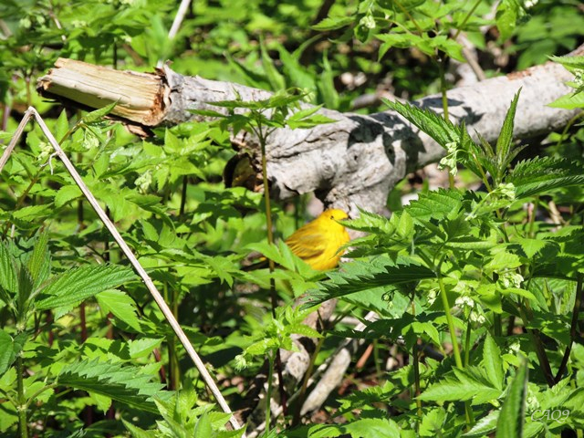

皮利角（Point Pelee）位于加拿大安大略省，是加拿大本土的最南端，延伸至伊利湖。皮利角国家公园（Point Pelee National Park）始建于1918年，每年春季都会有许多迁徙的鸟在此歇脚。公园因此引来无数观鸟者。（资料参考自维基百科）
加拿大国家公园的分布如下，其中图片底部的五角星处是皮利角：
皮利角在多伦多（Toronto）西南方向360公里，滑铁卢（Waterloo）西南方向280公里；在美国密歇根州底特律市（Detroit, Michigan）/加拿大温莎市（Windsor）东南60公里。隔伊利湖，与美国俄亥俄州克里夫兰市（Cleveland, Ohio）直线距离85公里。
我和小伙伴们一行在5月下旬来到皮利角国家公园，看到十余种鸟。虽然与公园历史上记录到的360多种鸟类相比，我们这只是九牛一毛，但确实大开眼界。分享给读者朋友们。认鸟靠Google，如果认错了还请达人们指出。
这种鸟在公园里有很多。雄鸟整体黑色，翅膀上带有红色加小条白色，很好认。
第一次见到树枝间的红翅黑鹂
这张自动对焦到树干了
昂首挺胸
特写
停在芦苇上，自动对焦又失败了
俯视的角度可以看到两边翅膀上的红肩章
芦苇荡里有好多红翅黑鹂停在芦苇顶端
这张是学会手动对焦以后拍摄的。凝望远方的鸟
捕捉到了张嘴鸣叫的一瞬
只捕捉到这一张，黑身子，黄嘴，猜测是某种八哥，像是紫翅椋鸟（欧洲八哥，Common Starling）。请鸟类达人指点。
这种鸟平时在家边就能见到，黑翅黄嘴红肚子。
停在栏杆上，没有对好焦
有一处沙滩有好些剪刀尾的鸟，一看就是燕子。还有一处屋子里满天飞着这种小燕，在梁下做窝。
大燕出窝把食打，我把大燕说一说
头部往下发蓝光，但是光不照到的话看着是黑的。
神情藐视一切
对焦又败了
在地上走，样子特别呆
以为是某种黄雀，仔细看翅膀就变灰黑色了，肚子也是白的。
停在好高的枝头
身量小巧
万绿丛中一点黄
背影特写
仔细看，这跟上面那种不一样的。这个是遍体通黄。
只拍到草地里的一张

很多年前见到过，有印象“唐纳雀”的名字。这次见到已经忘记了，不过这么鲜艳怎能不让人注目呢？
愤怒的小鸟
找虫子吃
还有一段视频在YouTube上，不过对焦完全失败了。
这可以算是加拿大的国鸟了。头回见到小雁（gosling），毛绒绒的，好萌！
四只小雁围着大雁
其实有两只大雁，估计是一家6口。好幸福
除了上面的9种鸟，我们还看到了类似麻雀的鸟，还有一种白鸟。到湖边还有很多海鸥。累计看到了12种鸟。
最后贴一张湿地深处的鸟岛图。没有路通到里面，变焦到最大才能隐约看到。时不时有群鸟飞起。
争渡，争渡，惊起一滩鸥鹭
感想：只靠小数码相机，没有三脚架，打鸟难度真是大！